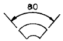
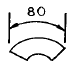
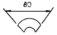
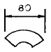
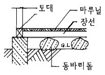
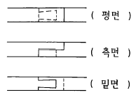
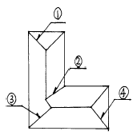
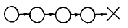
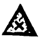
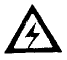

건축목공산업기사 (2003-05-25 기출문제)
1과목: 건축일반
1. 제도문자의 크기를 나타내는 문자의 기준은?
- 굵기
- 폭
- 높이
- 넓이
(정답률: 100%)

2. 각실 내부벽체의 장식을 명시하기 위해 작성하는 도면은?
- 계통도
- 설비도
- 천장 평면도
- 전개도
(정답률: 알수없음)
3. 각종 기하학적 도형이나 위생기구 등의 모양을 쉽게 그려 넣기 위한 용구는?
- 템플릿
- 만능제도기
- 운형자
- 디바이더
(정답률: 알수없음)
4. 아래의 그림 중 현의 길이를 나타내는 표시는?




(정답률: 알수없음)
5. 철근콘크리트 슬래브에 관한 기술 중 옳지 않은 것은?
- 슬래브의 두께는 8cm 이상으로 한다.
- 단변방향의 철근 간격은 20cm 이하로 한다.
- 장변길이가 단변길이의 2배 이하일때 2방향 슬래브라 한다.
- 양단부보다 중앙부에 철근이 많이 배근된다.
(정답률: 90%)
6. 철골구조의 접합법 중 고력볼트 접합의 특성과 관련이 없는 것은?
- 접합부의 강성이 좋다.
- 피로강도가 높다.
- 너트가 잘 풀리지 않는다.
- 큰 응력을 받는 접합부에는 부적당하다.
(정답률: 알수없음)
7. 철근콘크리트 장방형 기둥에는 주근을 몇개 이상 배근하여야 하는가?
- 3개
- 4개
- 6개
- 8개
(정답률: 100%)
8. 창호용 철물이 아닌 것은?
- 크레센트(crescent)
- 힌지(hinge)
- 피보트(pivot)
- 메탈폼(metal form)
(정답률: 93%)
9. 철근콘크리트 기둥의 단면적은 최소 얼마 이상이어야 하는가?
- 200cm2
- 400cm2
- 600cm2
- 800cm2
(정답률: 90%)
10. 왕대공지붕틀의 각 부재 중 압축응력을 받는 부재는?
- 왕대공
- 빗대공
- 달대공
- 평보
(정답률: 알수없음)
11. 철골조의 판보(plate girder)를 구성하는 부재가 아닌 것은?
- 플렌지
- 웨브
- 현재
- 스티프너
(정답률: 84%)
12. 시멘트의 품질 시험과 관계가 없는 것은?
- 비중시험
- 블리딩 시험
- 분말도 시험
- 응결 시험
(정답률: 알수없음)
13. 조기강도가 크고 화학작용에 대한 저항성이 크며 수축이 적고 내수성이 커서 해수 공사, 긴급 공사 등에 적당한 시멘트는?
- 중용열 포틀랜드 시멘트
- 알루미나 시멘트
- 슬래그 시멘트
- 보통 포오틀랜드 시멘트
(정답률: 75%)
14. 철근량을 줄이기 위해 피아노선을 넣어 미리 인장력을 가해둔 후 콘크리트를 부어 넣어 만든 콘크리트 제품은?
- 래디믹스트 콘크리트(Ready Mixed Concrete)
- 프리캐스트 콘크리트(Pre-cast concrete)
- 프리스트레스트 콘크리트(Pre-stressed Concrete)
- 제물 콘크리트(Exposed Concrete)
(정답률: 알수없음)
15. 네트워크 공정표의 특징에 대한 기술 중 옳지 않은 것은?
- 전자계산기의 이용이 가능하다.
- 공정관리가 편리하다.
- 작성자 이외의 사람도 이해하기 용이하다.
- 개개의 공사의 완급정도, 상호관계가 확실하지 않다.
(정답률: 100%)
16. 네트워크 공정표에서 플로오트(float)란?
- 작업의 여유시간
- 작업을 수행하는데 필요한 시간
- 작업을 시작하는 가장 빠른 시간
- 대상사업의 작업단위
(정답률: 94%)
17. 건축주가 시공자를 선정하는 방법을 분류할 때 수의계약 방식에 해당되는 것은?
- 일반경쟁 입찰
- 제한부 일반경쟁 입찰
- 지명경쟁 입찰
- 특명 입찰
(정답률: 알수없음)
18. 도면 작성에서 1점쇄선의 용도로 알맞지 않은 것은?
- 중심선
- 절단선
- 기준선
- 가상선
(정답률: 알수없음)
19. 조적조에서 통줄눈과 관계가 있는 것은?
- 블럭조
- 보강블럭조
- 벽돌조
- 테라코트조
(정답률: 알수없음)
20. 대린벽으로 구획된 벽돌벽의 길이가 9m 일 때 창호를 만들 수 있는 개구부 나비의 합계는 최대 얼마인가?
- 3.5m
- 4.0m
- 4.5m
- 5.0m
(정답률: 알수없음)
2과목: 목공작업 및 재료
21. 나사못 조임시 틀어 박아야 할 길이는 전체 나사 길이의 얼마인가?
- 최소한 1/3 이상
- 최소한 1/4 이상
- 최소한 1/5 이상
- 최소한 1/6 이상
(정답률: 알수없음)
22. 반자틀을 네모 방틀모양으로 하고, 서로 +자로 만나는 곳은 연귀턱맞춤으로 하는 반자는?
- 바름반자
- 널반자
- 살대반자
- 우물반자
(정답률: 알수없음)
23. 목조 계단의 구조에 대하여 설명한 내용 중 옳지 않은 것은?
- 계단 너비가 1.2m 이상일 때에는 계단멍에를 설치한다.
- 옆판의 두께는 50 - 100mm 정도가 적당하다.
- 디딤판은 챌판에 홈을 파서 끼워 넣는다.
- 계단멍에의 양 끝은 계단받이보 또는 바닥보에 장부 맞춤하고 볼트 죔으로 한다.
(정답률: 80%)
24. 양식 지붕틀의 보의 이음을 왕대공 가까이에서 하는 이유는?
- 이음을 쉽게 할 수 있다.
- 왕대공에 가까울수록 응력이 적다.
- 응력을 받지 않는다.
- 왕대공에 가까울수록 압축력이 적다.
(정답률: 92%)
25. 다음 슬라이딩 폼의 특징에 관한 설명 중 틀린 것은?
- 슬라이딩폼을 사용하면 일반거푸집 보다 공기를 1/5정도 단축시킬 수 있다.
- 복잡한 비계 가설이 불필요하다.
- 돌출부나 복잡한 구조물에 적합하다.
- 연속적으로 콘크리트 이어붓기가 가능하다.
(정답률: 알수없음)
26. 목재의 건조법 중 틀린 것은?
- 통풍 건조법
- 대기 건조법
- 인공 건조법
- 침수법
(정답률: 92%)
27. 일반적으로 거푸집에 사용하는 합판의 두께로 알맞은 것은?
- 두께 6∼9mm
- 두께 9∼12mm
- 두께 12∼15mm
- 두께 15mm 이상
(정답률: 알수없음)
28. 목구조에 관한 기술에서 옳지 않은 것은?
- 중도리의 이음은 내이음보다 심이음이 좋다.
- 가새나 귀잡이 재가 많은 건축물은 튼튼하다.
- 기둥은 토대에 짧은 장부맞춤하고 철물이나 산지로 보강할 필요가 있다.
- 토대는 기초에 앵커볼트로 고정시켜야 한다.
(정답률: 알수없음)
29. 비계 다리 경사로 적당한 것은?
- 17°
- 19°
- 21°
- 23°
(정답률: 알수없음)
30. 쌍장부 맞춤은 주로 어느 부분에 쓰이는가?
- 창호
- 박공널
- 왕대공과 마룻대
- 토대의 모서리
(정답률: 80%)
31. 간단한 창고, 공작실, 기타 임시적인 건물 등의 마루를 그림과 같이 낮게 설치하는 마루의 명칭은?

- 홑마루
- 납작마루
- 동바리마루
- 짠마루
(정답률: 91%)
32. 접합용 주걱 볼트로서 4개의 부재를 동시에 긴결할 수 있는 부재로 묶은 것은?
- 동바리, 장선, 토대, 기둥
- 기둥, 평보, 처마도리, 깔도리
- 대공, 대공밑잡이, 평보, 가새
- ㅅ자보, 평보, 귀잡이보, 깔도리
(정답률: 80%)
33. 그림과 같은 이음은?

- 주먹장 이음
- 두겁주먹장 이음
- 턱걸이주먹장 이음
- 턱솔 이음
(정답률: 알수없음)
34. 다음 중 절충식 지붕틀과 관계가 없는 부재는?
- 서까래
- 중도리
- 빗대공
- 처마도리
(정답률: 60%)
35. 계산에 의하여 실장, 실각을 알아내는 방법을 무엇이라 하는가?
- 근사법
- 물매법
- 산정법
- 절단법
(정답률: 알수없음)
36. 거푸집 세우기에 있어 일반적으로 비킴먹은 기둥심에서 몇 m정도 떨어져 치는 것이 적당한가?
- 1m
- 2m
- 3m
- 4m
(정답률: 82%)
37. 거푸집면적을 산출하는 방법으로 옳지 않은 것은?
- 기둥의 거푸집 면적은 기둥의 둘레길이에 기둥 높이를 곱하여 산출한다.
- 바닥판의 거푸집 면적은 벽의 두께에 대한 면적을 뺀 바닥면적으로 본다.
- 보의 거푸집 면적은 기둥간의 안목길이에 바닥판 두께를 뺀 보의 춤의 3배를 곱한다.
- 기초 거푸집 면적은 경사면의 물매가 30° 를 넘지 않는 경우에는 기초주위의 수직면 거푸집만 계산한다.
(정답률: 30%)
38. 거푸집 시공상의 주의사항 중 옳지 않은 것은?
- 콘크리트를 부어 넣어 외력에 충분히 안전하게 할 것
- 형상, 치수가 정확하고 외력에 의한 변형이 생기지 않게 할 것
- 소요자재의 반복사용은 위험하므로 재사용을 피할 것
- 거푸집 널의 쪽매는 수밀하게 되어 시멘트 풀이 새지않게 할 것
(정답률: 알수없음)
39. 거푸집의 측압에 가장 큰 영향을 주는 요소는 어느 것인가?
- 콘크리트의 시공연도
- 콘크리트의 붓기 속도
- 골재의 입도
- 콘크리트의 다지기 방법
(정답률: 알수없음)
40. 보, 슬래브 형틀의 검사에 관한 기술 중 옳지 않은 것은?
- 보의 위치 및 단면치수가 올바른가를 검사한다.
- 슬래브의 수평과 내림바닥의 내림치수가 설계대로 되었는가를 검사한다.
- 긴결철물의 종류, 치수, 위치, 조이기는 잘되었는가 검사한다.
- 출입구와 접한 스위치 콘센트를 검사한다.
(정답률: 알수없음)
3과목: 안전관리
41. 다음 목재 중 인장강도가 가장 큰 것은?
- 밤나무
- 미송
- 육송
- 낙엽송
(정답률: 알수없음)
42. 아름다운 장식적인 결을 갖는 합판의 제조법은?
- 로터리베니어
- 반로터리베니어
- 소드베니어
- 슬라이스트베니어
(정답률: 92%)
43. 왕대공 트러스에서 평보를 기둥에 긴결시킬 때 적당한 긴결철물은?
- 관통볼트
- 주걱볼트
- 감잡이쇠
- 꺽쇠
(정답률: 67%)
44. 기초거푸집 경사면에 거푸집을 대는 물매는?
- 3/10
- 4/10
- 5/10
- 6/10
(정답률: 91%)
45. 한식 목조 구조에서 벽면이 좁고 길게된 벽은?
- 온벽
- 징두리벽
- 실벽
- 중방벽
(정답률: 84%)
46. 목구조의 장점이 아닌 것은?
- 비중에 비해 강도가 크다.
- 열전도율이 크다.
- 색채 및 무늬가 있어 미려하다.
- 건물의 무게가 가볍고 공작이 쉽다.
(정답률: 88%)
47. 평면도상 지붕그림에서 골 추녀는?

- ①
- ②
- ③
- ④
(정답률: 100%)
48. 그무개의 종류가 아닌 것은?
- 평행 그무개
- 쪼개기 그무개
- 줄 그무개
- 장부 그무개
(정답률: 80%)
49. 다음 중 재료의 할증률이 잘못된 것은?
- 텍스 : 5％
- 석고판(붙임용) : 8％
- 단열재 :10％
- 코르크판 : 5％
(정답률: 70%)
50. 수축이 적고 균열이 생기지 않아 공기단축의 이점이 있는 보드는?
- 평석고보드
- 화장석고보드
- 석고흡음보드
- 석고라스보드
(정답률: 알수없음)
51. 다음 그림은 어떠한 사고요인의 배열형태인가?

- 단순 사슬형
- 집중형
- 복합 사슬형
- 혼합형
(정답률: 100%)
52. 도수율을 구하는 공식은?
- 근로재해건수(N)/연근로시간(H) × 1,000
- 근로재해건수(N)/연근로시간(H) × 10,000
- 근로재해건수(N)/연근로시간(H) × 100,000
- 근로재해건수(N)/연근로시간(H) × 1,000,000
(정답률: 80%)
53. 위험물 안전표지 등에 사용되는 보라색의 용도는?
- 위험, 금지
- 안전과 보건위생
- 방사능
- 경고, 주의
(정답률: 알수없음)
54. 정성적 표시로 상황변화를 나타내는 것은?
- 전압
- 속도계
- 유량계
- 신호등
(정답률: 100%)
55. 재해발생원인중 관리적 원인에 해당하지 않는 것은?
- 미경험자의 취업
- 정리정돈의 불철저
- 작업관리의 불비
- 지식, 기능의 결함
(정답률: 87%)
56. 건설공사장의 각종공사에 대한 안전공법을 설명한 내용 중 옳지 않은 것은?
- 기초 말뚝시공 소음,진동을 방지하는 시공법을 수립한다.
- 지하실을 굴착할 경우 지층상태, 배수상태, 붕괴위험도 등을 수시로 점검한다.
- 철근을 용접할때는 거푸집의 화재에 주의한다.
- 조적공사를 할때는 다른 공정을 중지시켜야 한다.
(정답률: 알수없음)
57. 화재 발생시 경보설비가 아닌 것은?
- 스프링클러설비
- 자동화재탐지설비
- 누전경보기
- 자동화재속보설비
(정답률: 85%)
58. 정량적인 동적 표시 장치에 속하지 않는 것은?
- 정목 동침형
- 정침 동목형
- 계수형
- 정성적 표시형
(정답률: 알수없음)
59. 표시방식을 설계할 때 고려해야할 사항 중 잘못된 것은?
- 여러종류의 계기를 복합적으로 표시할 때는 관련성 있는 것끼리 조합하여 배치한다.
- 각 계기의 표시양식을 달리할 필요가 있다.
- 불필요한 표시를 삼가한다.
- 지시등이나 경계등은 색깔, 설치 위치 등을 고려하여 알아보기 쉽게 한다.
(정답률: 90%)
60. 산업안전 표지중 위험장소 경고 표지는?


(정답률: 100%)